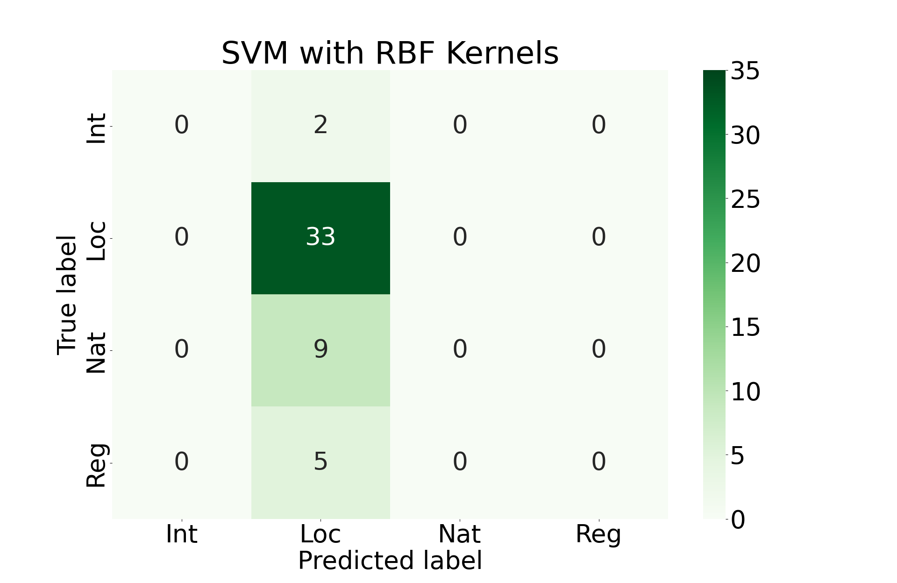

Support Vector Machine (SVM)
Introduction
The SVM model approaches classification problems by finding optimal hyperplanes in high-dimensional space that separate the observed classes in the data. Because SVM is primarily a binary classification method, we can adapt it to classifying multiple classes in the data by creating several hyperplanes with a One vs One approach or One vs All.
Class Distribution
In this section, we take the same task as in the Naive Bayes section of predicting the level of news coverage for a given school shooting incident based on the school's education level (Elementary, Middle, High), racial demographics, and number of fatalities. With this data, we hope to predict the level of media coverage the incident received (Local, Regional, National, or International). After we import our data, we check the balance of labels in our dataset.
| Count | Percentage | |
|---|---|---|
| Local | 56 | 66.7% |
| Regional | 8 | 9.5% |
| National | 15 | 17.9% |
| International | 5 | 5.9% |
We can see here that the classes are not well-balanced at all. This may be detrimental to the eventual performance of the model.
Feature Selection
Because we approached an identical problem to this one in the Naive Bayes section, we can use the preprocessed data from that section for this section. However, one change we will make is to drop the columns for the percent of Black, Hispanic, and Asian students in the school. The reason for this is that there is inherent multicollinearity with these columns and the percent of white students in the school. Thus, they deliver roughly the same information and may be dropped.
Model Tuning
Here we will train an SVM model using linear kernels, polynomial kernels, RBF kernels, and sigmoid kernels. We will accept the model that performs best among these options.
Final Results
Unfortunately, all of these approaches perform roughly the same. They primarily favor prediction that the incident was locally covered. This is almost certainly due to the imbalance of classes that we see above.
Conclusions
All in all, this analysis isn't very informative. This is likely due to the low quality of data. It would be worthwhile in future work to return to this modeling approach with a cleaner, more balanced dataset.